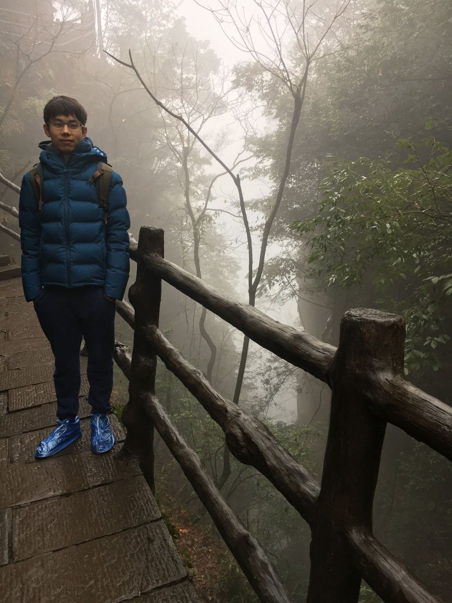
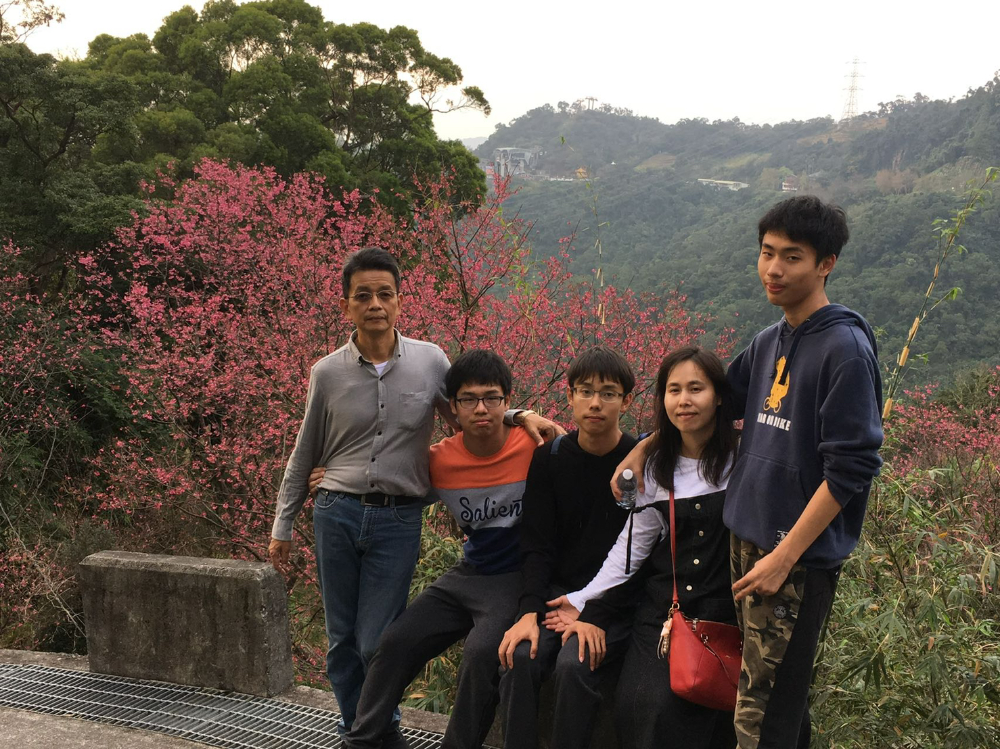
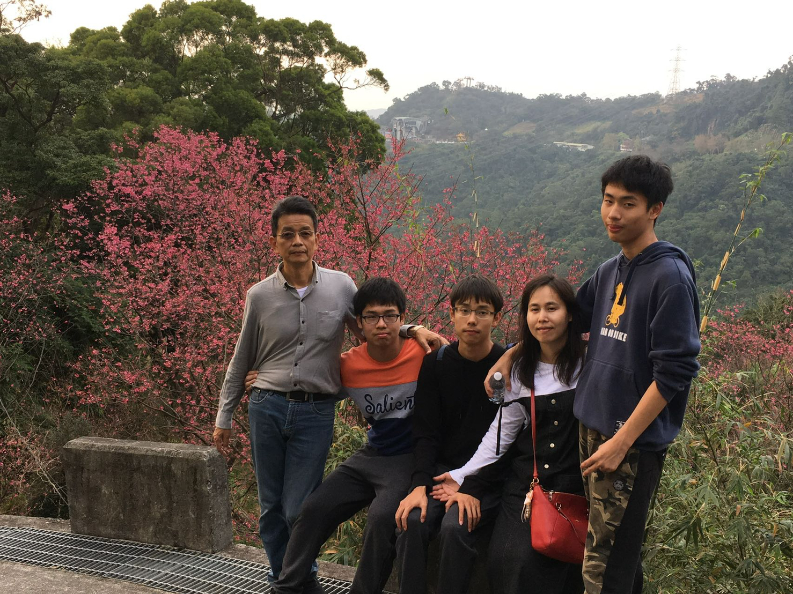

Hello!
許國城的自我介紹

自我介紹
我是四訊三丙的許國城，我來自於新北市泰山區，我出生於一家三口中，我的星座是金牛座，在家中排行老二，我的個性沉穩且溫和，但是也有些許的優柔寡斷 ，我喜歡做事情有條有理，但是有時容易多慮，因為我想把每一件事情做到最好。對於我我認為做好本分是最為重要的，所以在做事情時總是會想把事情做的完整， 當然這也就導致我多慮的性格，也希望自己能平衡這方面的問題。
許國城的自我介紹
我是四訊三丙的許國城，我來自於新北市泰山區，我出生於一家三口中，我的星座是金牛座，在家中排行老二，我的個性沉穩且溫和，但是也有些許的優柔寡斷 ，我喜歡做事情有條有理，但是有時容易多慮，因為我想把每一件事情做到最好。對於我我認為做好本分是最為重要的，所以在做事情時總是會想把事情做的完整， 當然這也就導致我多慮的性格，也希望自己能平衡這方面的問題。
